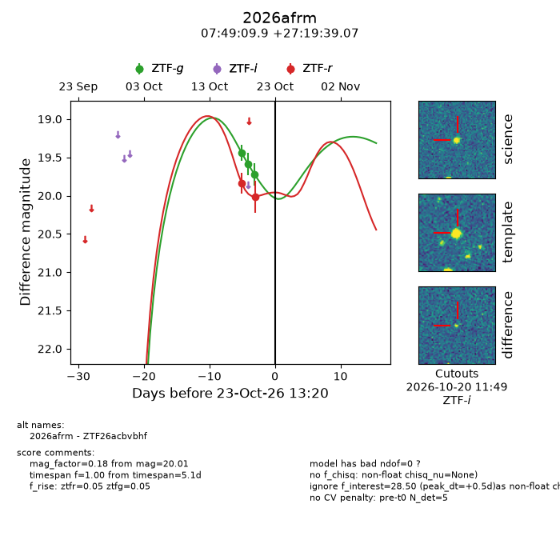
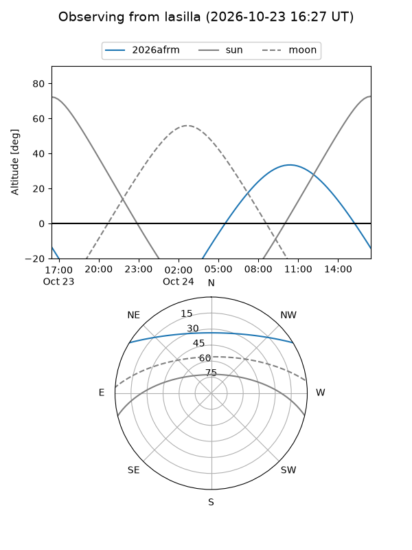
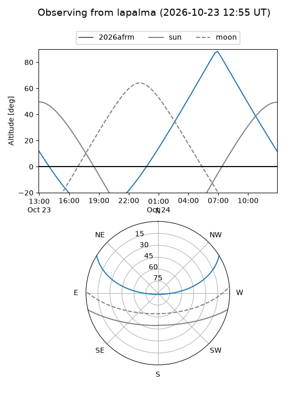
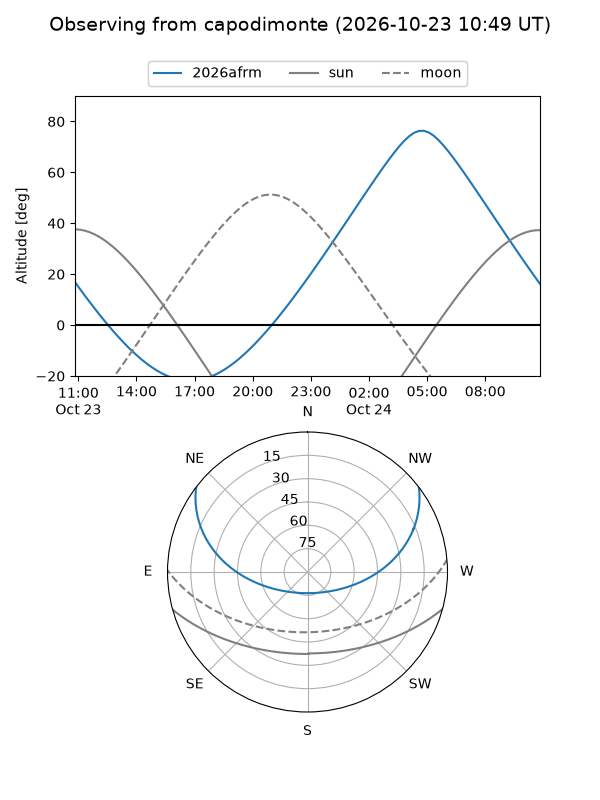
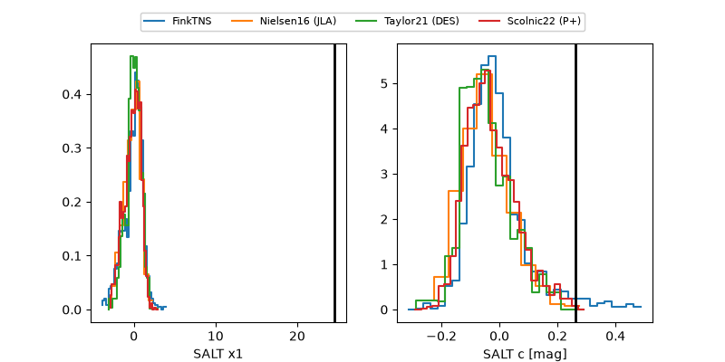

2026afrm
Target 2026afrm at 2026-10-23 13:22
Aliases and brokers:
FINK-ZTF: ztf.fink-portal.org/ZTF26acbvbhf
Lasair-ZTF: lasair-ztf.lsst.ac.uk/objects/ZTF26acbvbhf
ALeRCE-ZTF: alerce.online/object/ZTF26acbvbhf
YSE-PZ: ziggy.ucolick.org/yse/transient_detail/2026afrm
TNS name: wis-tns.org/object/2026afrm
Direct TNS query: direct search
alt names
ZTF26acbvbhf (ztf,fink_ztf)
2026afrm (tns,yse)
Coordinates:
equatorial (ra, dec) = 117.2912,+27.32752
equatorial (HMS+DMS) = 07:49:09.89,+27:19:39.07
galactic (l, b) = (193.2580,+23.97795)
Flags:
peak dt: +0.5
Photometry:
last ztfg=19.72, ztfr=20.01
3 ztfg, 2 ztfr detections
Lightcurve

Visibility



Additional plots
